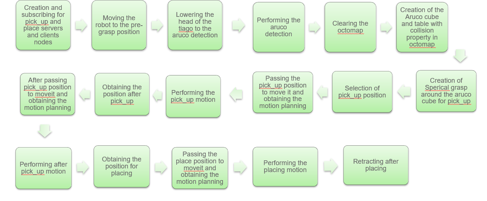

This project focuses on building a complete pick-and-place pipeline using the TIAGo robot. The system integrates perception, planning, and control to autonomously detect, grasp, and place objects in both simulation and real-world environments.

End-to-end pipeline illustrating perception, planning, and execution for autonomous pick-and-place using the TIAGo robot.